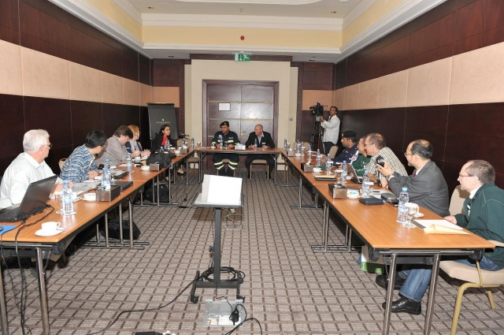

The INSARAG Medical Working Group (MWG) in keeping with UN General Assembly Resolution 57/150 on "Strengthening the Effectiveness and Coordination of International Urban Search and Rescue Assistance" aims to the enhance the INSARAG Guidelines that will enable the medical component of a USAR team and develop relevant medical guidance notes. MWG was established in 2008 with the endorsement from the INSARAG Steering Committe in 2007 . This inter-regional working group aims to focus on the medical requirements of international USAR teams being deployed outside their countries of origin. The group meets two to three times a year. The reports of this working group's meetings can be found below. The medical guidance notes prepared by this working group and endorsed by the INSARAG Steering Group can be found at 'Methodology' tab.
Chair of MWG:
Dr. Anthony Macintyre
Email: macintyr@gwu.edu
